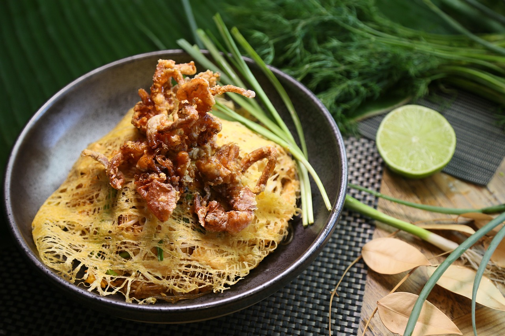

Pad Thaï

Description
Pad Thai is like a warm blanket. It’s a comfort food of our age, with those chewy noodles, crunchy peanuts, the sweet and tangy sauce, and plenty of chives, bean sprouts, and chicken to make it a full meal.
Ingredients
- Tamarind
- Ground Dried Shrimp
- Thai Soy Sauce
- Fish Sauce
- Garlic Chives:
- Preserved Salted Radish
- Pad Thai noodles
- Sliced chicken
- Dried shrimp
- Peanuts
Steps
- Make the sauce
- Soak the pad Thai noodles in hot water for about 20 minutes, and drain in a colander
- Marinate the sliced chicken by combining it with 1 teaspoon each of Thai thin soy sauce, cornstarch, and water. Set aside
- Prepare the dried shrimp, mincing them down into a coarse powder
- Prepare the garlic, shallots/red onion, Thai preserved salted radish or preserved Chinese mustard stems (zha cai), eggs, mung bean sprouts, garlic chives, and peanuts.
- Now you’re ready to cook
Home